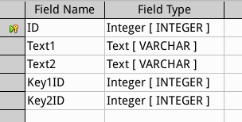
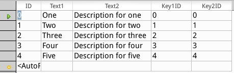
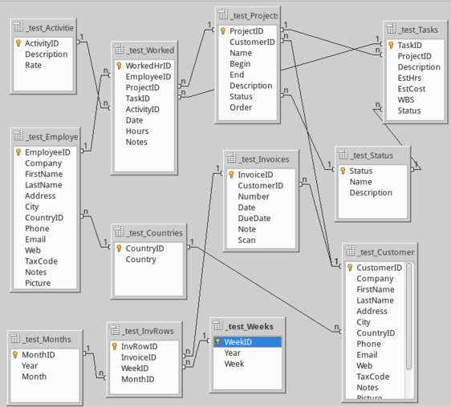
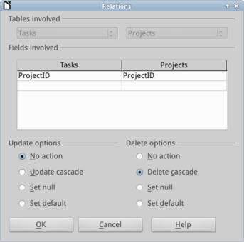

Tables
Created sabato 21 febbraio 2015
Tables
As a sandbox create a testing table, once you are done give a look to other tables of xTimeCard.

_test
We work on the set of tables called _test containing sample data from Ziff Corp. First of all create a table called “_test”, add an auto-value primary key of length 10, two text fields of length 50 and two more numeric fields as integer of length 10.

SQL script
As you probably know this table may be created also with this SQL script:
CREATE CACHED TABLE "_test"("ID" INTEGER NOT NULL PRIMARY KEY,"Text1" VARCHAR(50),"Text2" VARCHAR(50),"Key1ID" INTEGER,"Key2ID" INTEGER)
INSERT INTO "_test" VALUES(0,'One','Description for one',0,0)
INSERT INTO "_test" VALUES(1,'Two','Description for two',1,1)
INSERT INTO "_test" VALUES(2,'Three','Description for three',2,2)
INSERT INTO "_test" VALUES(3,'Four','Description for four',3,3)
INSERT INTO "_test" VALUES(4,'Five','Description for five',4,4)
All tables
Here are listed all tables with a short description to better understand the skeleton of xTimeCard. We work on the set of tables called _test containing sample data from Ziff Corp.
Activities
This table is a master data, has the purpose to keep information about the work activity performed, has a key, a description and a billing rate. It is connected to master data of tasks and transactions of worked time. It may be created also with this SQL script:
Status
This table is a master data, has the purpose to describe the roadmap of projects, which is meant to be standard. It is also used by tasks to identify the belonging to project's phase. It is obviously connected to master data of projects and tasks.
Invoices
This table is a transaction data, has the purpose to bill weekly our customers by using a form that allow to select worked hours by week and sign as billed. It contains information of the company (= first record of Employee table), invoice date, payment date, invoice number, and invoice values.
Projects
This table is a master data, has the purpose to keep information about projects and is directly connected to master data of Customers. It contains information of the motivation, begin and end dates, customer's order and actual state. It connects with transaction data of worked hours.
Tasks
This table is a master data, has the purpose to keep information about tasks within a project, therefore directly connected to master data of Projects. It contains information of the motivation, begin and end dates, customer's order and actual state.
WorkedHrs
This table is a transaction data, has the purpose to record daily work. It contains information of the employee, the activity performed and the matrix the project/task/wbs. Once an invoice is created, the single worked hour will be connected the the invoice id.
Customers
This table is a master data, has the purpose to keep information of our customers.
Employees
This table is a master data, has the purpose to keep information of our selves. The first record is to be considered as the company issuing invoices.
Countries
This table is a master data, has the purpose to allow selection of country while filling customer and employees forms.
Weeks, Months
These tables are master data, has the purpose to identify week or month for billing.
All tables SQL script
CREATE CACHED TABLE "_test"("ID" INTEGER GENERATED BY DEFAULT AS IDENTITY(START WITH 0) NOT NULL PRIMARY KEY,"Text1" VARCHAR(50),"Text2" VARCHAR(50),"Key1ID" INTEGER,"Key2ID" INTEGER)
CREATE CACHED TABLE "_test_Customers"("CustomerID" INTEGER GENERATED BY DEFAULT AS IDENTITY(START WITH 0) NOT NULL PRIMARY KEY,"Company" VARCHAR(50),"FirstName" VARCHAR(50),"LastName" VARCHAR(50),"Address" VARCHAR(100),"City" VARCHAR(50),"CountryID" INTEGER,"Phone" VARCHAR(30),"Email" VARCHAR(50),"Web" VARCHAR(200),"TaxCode" VARCHAR(50),"Notes" LONGVARCHAR,"Picture" LONGVARBINARY,"Disq" TINYINT,"BillWM" CHAR(1))
CREATE CACHED TABLE "_test_Employees"("EmployeeID" INTEGER GENERATED BY DEFAULT AS IDENTITY(START WITH 0) NOT NULL PRIMARY KEY,"Company" VARCHAR(50),"FirstName" VARCHAR(50),"LastName" VARCHAR(50),"Address" VARCHAR(100),"City" VARCHAR(50),"CountryID" INTEGER,"Phone" VARCHAR(30),"Email" VARCHAR(50),"Web" VARCHAR(200),"TaxCode" VARCHAR(50),"Notes" LONGVARCHAR,"Picture" LONGVARBINARY)
CREATE CACHED TABLE "_test_Projects"("ProjectID" INTEGER GENERATED BY DEFAULT AS IDENTITY(START WITH 0) NOT NULL PRIMARY KEY,"CustomerID" INTEGER,"Name" VARCHAR(50),"Begin" DATE,"End" DATE,"Description" LONGVARCHAR,"Status" TINYINT,"Order" VARCHAR(50),CONSTRAINT SYS_FK_579 FOREIGN KEY("CustomerID") REFERENCES "_test_Customers"("CustomerID"))
CREATE CACHED TABLE "_test_WorkedHrs"("WorkedHrID" INTEGER GENERATED BY DEFAULT AS IDENTITY(START WITH 0) NOT NULL PRIMARY KEY,"EmployeeID" INTEGER,"ProjectID" INTEGER,"TaskID" INTEGER,"ActivityID" INTEGER NOT NULL,"Date" DATE,"Hours" DECIMAL(6),"Notes" LONGVARCHAR,CONSTRAINT SYS_FK_564 FOREIGN KEY("EmployeeID") REFERENCES "_test_Employees"("EmployeeID"),CONSTRAINT SYS_FK_576 FOREIGN KEY("ProjectID") REFERENCES "_test_Projects"("ProjectID"))
CREATE CACHED TABLE "_test_Tasks"("TaskID" INTEGER GENERATED BY DEFAULT AS IDENTITY(START WITH 0) NOT NULL PRIMARY KEY,"ProjectID" INTEGER NOT NULL,"Description" VARCHAR(200),"EstHrs" DECIMAL(6),"EstCost" DECIMAL(10,2),"WBS" VARCHAR(50) NOT NULL,"Status" TINYINT,CONSTRAINT SYS_FK_595 FOREIGN KEY("ProjectID") REFERENCES "_test_Projects"("ProjectID"))
CREATE CACHED TABLE "_test_Invoices"("InvoiceID" INTEGER GENERATED BY DEFAULT AS IDENTITY(START WITH 0) NOT NULL PRIMARY KEY,"CustomerID" INTEGER,"Number" VARCHAR(50),"Date" DATE,"DueDate" DATE,"Note" VARCHAR(100),"Scan" LONGVARBINARY,CONSTRAINT SYS_FK_573 FOREIGN KEY("CustomerID") REFERENCES "_test_Customers"("CustomerID"))
CREATE CACHED TABLE "_test_Status"("Status" TINYINT NOT NULL PRIMARY KEY,"Name" VARCHAR(20),"Description" VARCHAR(200))
CREATE CACHED TABLE "_test_Activities"("ActivityID" INTEGER GENERATED BY DEFAULT AS IDENTITY(START WITH 0) NOT NULL PRIMARY KEY,"Description" VARCHAR(200) NOT NULL,"Rate" DECIMAL(10,2) NOT NULL)
CREATE CACHED TABLE "_test_Countries"("CountryID" INTEGER NOT NULL PRIMARY KEY,"Country" VARCHAR(100))
CREATE CACHED TABLE "_test_InvRows"("InvRowID" INTEGER GENERATED BY DEFAULT AS IDENTITY(START WITH 0) NOT NULL PRIMARY KEY,"InvoiceID" INTEGER,"WeekID" INTEGER,"MonthID" INTEGER,CONSTRAINT SYS_FK_2113 FOREIGN KEY("InvoiceID") REFERENCES "_test_Invoices"("InvoiceID") ON DELETE CASCADE ON UPDATE CASCADE)
CREATE CACHED TABLE "_test_Weeks"("WeekID" INTEGER GENERATED BY DEFAULT AS IDENTITY(START WITH 0) NOT NULL PRIMARY KEY,"Year" SMALLINT,"Week" TINYINT)
CREATE CACHED TABLE "_test_Months"("MonthID" INTEGER GENERATED BY DEFAULT AS IDENTITY(START WITH 0) NOT NULL PRIMARY KEY,"Year" SMALLINT,"Month" TINYINT)
ALTER TABLE "_test_Customers" ADD CONSTRAINT SYS_FK_589 FOREIGN KEY("CountryID") REFERENCES "_test_Countries"("CountryID")
ALTER TABLE "_test_Employees" ADD CONSTRAINT SYS_FK_592 FOREIGN KEY("CountryID") REFERENCES "_test_Countries"("CountryID")
ALTER TABLE "_test_Projects" ADD CONSTRAINT SYS_FK_2486 FOREIGN KEY("Status") REFERENCES "_test_Status"("Status")
ALTER TABLE "_test_WorkedHrs" ADD CONSTRAINT SYS_FK_561 FOREIGN KEY("ActivityID") REFERENCES "_test_Activities"("ActivityID")
ALTER TABLE "_test_WorkedHrs" ADD CONSTRAINT SYS_FK_598 FOREIGN KEY("TaskID") REFERENCES "_test_Tasks"("TaskID")
ALTER TABLE "_test_Tasks" ADD CONSTRAINT SYS_FK_2483 FOREIGN KEY("Status") REFERENCES "_test_Status"("Status")
ALTER TABLE "_test_InvRows" ADD CONSTRAINT SYS_FK_1525 FOREIGN KEY("WeekID") REFERENCES "_test_Weeks"("WeekID")
ALTER TABLE "_test_InvRows" ADD CONSTRAINT SYS_FK_2228 FOREIGN KEY("MonthID") REFERENCES "_test_Months"("MonthID")
Relationships
Now is the time to look at the relationship between the tables we just analyzed. Generally speaking a master data table will likely have 1:n relationship while an operations table would have n:1. Learn more on referential integrity which s the main principle a beginner approaches database systems.

Build your own
From menu Tools → Relationships and for each table set the proper relationship, verify that dragging over to create connection actually create the correct relationship 1:1 or 1:n.
Action
To grant referential integrity action may be set within the relationship, for instance if an information is spread over few tables and deletion occurs we may have an action that simultaneously eliminate records from other tables. Let's say if I delete a project, I want to be sure that also its tasks are eliminated.

@base @xtimecard @customize
Backlinks:
Home:Software:xTimeCard:Customize